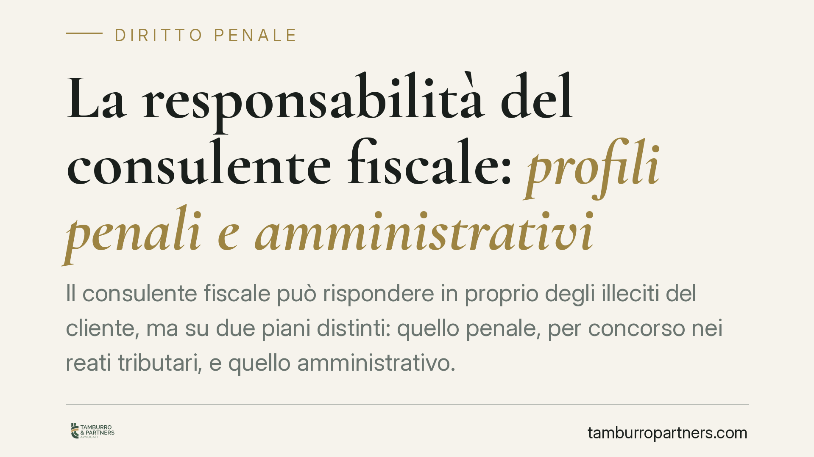

La responsabilità del consulente fiscale: profili penali e amministrativi
Il consulente fiscale può rispondere in proprio degli illeciti del cliente, ma su due piani distinti: quello penale, per concorso nei reati tributari, e quello amministrativo. Confonderli genera equivoci pericolosi. Analizziamo quando scatta la responsabilità del professionista, quali condotte rilevano e perché la diligenza qualificata diventa il vero spartiacque.

Due piani da non confondere
Quando si parla di responsabilità del commercialista per gli illeciti fiscali del cliente, si sovrappongono spesso due ambiti del tutto diversi: la responsabilità penale per i reati tributari e la responsabilità amministrativa per le sanzioni pecuniarie. Hanno presupposti, prove e conseguenze differenti. Tenerli distinti è il primo passo per capire l'effettivo perimetro del rischio professionale.
Sul piano penale, il consulente può rispondere a titolo di concorso (art. 110 c.p.) nei reati dichiarativi e documentali previsti dal D.lgs. 74/2000: dichiarazione fraudolenta mediante uso di fatture false (art. 2), dichiarazione infedele (art. 4), emissione di fatture per operazioni inesistenti (art. 8), occultamento o distruzione di documenti contabili (art. 10). Non basta aver redatto materialmente la dichiarazione: occorre un apporto consapevole e volontario alla condotta illecita del contribuente. Il semplice errore tecnico, o la negligenza, non integrano il dolo richiesto dalla fattispecie penale.
Il contributo del professionista nel concorso penale
Il punto delicato è distinguere l'attività professionale lecita dal contributo penalmente rilevante. La giurisprudenza richiede la prova che il consulente abbia concretamente agevolato il disegno fraudolento con consapevolezza: ad esempio ideando lo schema evasivo, procurando la documentazione falsa o fornendo indicazioni operative finalizzate all'evasione.
La condotta omissiva rileva solo entro limiti precisi: in ambito penale occorre di norma un dolo diretto o eventuale e, per i reati omissivi impropri, una posizione di garanzia. Il consulente che si limita a elaborare i dati forniti dal cliente, senza percepirne la falsità, non concorre nel reato. Diverso è il caso di chi, consapevole dell'illiceità, presti comunque la propria opera.
Il piano amministrativo
Sul versante delle sanzioni amministrative tributarie, il quadro cambia. L'art. 9 del D.lgs. 472/1997 disciplina il concorso di persone nella violazione, mentre l'art. 5 àncora la punibilità alla colpevolezza, richiedendo almeno la colpa. In questo ambito la soglia soggettiva è più bassa rispetto al dolo penale: anche condotte gravemente negligenti possono rilevare.
Va trattato con prudenza l'art. 7 del DL 269/2003, che riferisce le sanzioni amministrative relative al rapporto fiscale esclusivamente alla persona giuridica che ne ha tratto beneficio. Secondo un orientamento, la norma non esclude di per sé la responsabilità del professionista estraneo a quel rapporto: si tratta però di materia controversa, in cui l'esito dipende dalla concreta posizione del consulente e dalla natura del contributo. Non è un dato pacifico e va valutato caso per caso.
La diligenza qualificata come spartiacque
Il riferimento che attraversa entrambi i piani è l'art. 1176, secondo comma, c.c.: la diligenza del professionista si misura con riguardo alla natura dell'attività esercitata. Il commercialista non è tenuto a un controllo investigativo sul cliente, ma deve applicare le competenze tecniche proprie della categoria e segnalare le criticità evidenti.
Questo standard rileva soprattutto in sede civile e amministrativa. In ambito penale, invece, la diligenza violata non basta: serve il dolo. È qui che molti equivoci nascono, perché una condotta che integra responsabilità amministrativa o civile non è automaticamente reato.
Cosa cambia per il professionista
Il messaggio operativo è chiaro: il consulente non risponde automaticamente per il fatto del cliente, ma la sua esposizione cresce quando la documentazione e le procedure non consentono di dimostrare la correttezza del proprio operato. La tracciabilità delle informazioni ricevute e delle verifiche svolte diventa decisiva, sia per escludere il dolo penale, sia per dimostrare l'assenza di colpa in sede amministrativa.
Cosa fare in concreto
- Documenta per iscritto le informazioni e i documenti ricevuti dal cliente, conservando le fonti su cui si fonda ogni dichiarazione.
- Formalizza le segnalazioni di criticità o incongruenze al cliente, così da provare la diligenza tecnica richiesta dall'art. 1176 c.c.
- Distingui il ruolo: limita l'attività all'elaborazione dei dati forniti ed evita di partecipare a operazioni di cui non puoi verificare la genuinità.
- Interrompi il rapporto quando emergano indici di frode che il cliente non intenda chiarire.
- Richiedi un parere specifico nelle operazioni complesse o a rischio, dove il confine tra consulenza lecita e contributo illecito è incerto.
Può essere opportuno rivedere periodicamente le procedure interne di acquisizione e conservazione documentale, alla luce dell'orientamento giurisprudenziale in evoluzione.
---
Contributo informativo a cura di Tamburro & Partners - Avv. Giuseppe Tamburro. Non costituisce parere legale.
Ogni condominio ha una storia a sé.
Se gestisci un'amministrazione e vuoi un confronto su una specifica questione condominiale, scrivi allo studio. Ti rispondiamo entro un giorno lavorativo.